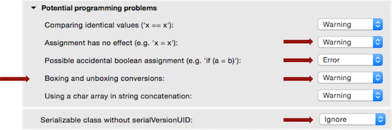
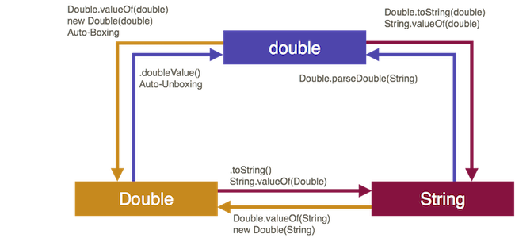

Wrapper-Klassen¶
Motivation
Letzte Woche haben wir mit folgender Fragestellung geendet: Wie wandeln wir einen String zu einem int (oder double) um? Die Antwort, die uns den Ausblick auf das Thema der heutigen Woche gibt, war: mit Wrapper-Klassen.
In Programmierung I haben wir am Anfang die Datentypen int, boolean, double, char, long usw. kennengelernt. Wir haben diese Datentypen als Wertetypen kennenglernt, denn sie können nur Werte abbilden. Das Gegenstück dazu sind Referenztypen, welche Referenzen auf Objekte repräsentieren. Für jeden Wertetyp gibt es aber auch einen entsprechenden Referenztyp, die sogenannten Wrapper-Klassen. Diese sind Integer, Double, Float, Short, Byte, Long, Character und Boolean und befinden sich im java.lang-Paket (also dem Standardpaket von Java - muss nicht importiert werden). Wir werden diese Wrapper-Klassen dieses Semester häufiger verwenden, insbesondere wenn wir Collections kennenlernen.
Die grundsätzliche Idee von Wrapper-Klassen ist das "Verpacken" (wrappen) eines Wertetyps in einen Referenztyp. Die folgende Abbildung soll das für das Beispiel int ↔ Integer verdeutlichen:
Der int-Wert 10 wird zu einem Typ Integer und somit zu einem Referenztyp. Dafür sind alle Vorteile von Referenztypen nutzbar, z.B. Objektmethoden, Vererbung usw.
Welche Wrapper-Klasse zu welchem Wertetyp gehört, wird aus dem Namen erkennbar. Leider ist das aber nicht ganz konsistent. Während die Wrapper-Klassen von boolean, byte, short, long, float und double so heißen, wie die Wertetypen, nur jeweils mit einem Großbuchstaben am Anfang, heißt die Wrapper-Klasse von char Character und die Wrapper-Klasse von int Integer.
| Wertetyp | Referenztyp (Wrapper-Klasse) |
|---|---|
byte |
Byte |
short |
Short |
int |
Integer |
long |
Long |
float |
Float |
double |
Double |
boolean |
Boolean |
char |
Character |
Objekterzeugung¶
Es gibt ziemlich viele Möglichkeiten, um Objekte eines Wrapper-Klassen-Typs zu erzeugen:
- Verwendung des Kontruktors, Parameterwert entweder vom Typ
Stringoder vom entsprechenden Wertetyp, - Verwendung der statischen Methode
valueOf(), Parameterwert entweder vom TypStringoder vom entsprechenden Wertetyp, - sogenanntes Boxing (automatisches wrappen eins Wertes in seinen Referenztyp).
Wir schauen uns die drei Möglichkeiten am Beispiel von Integer an. Es gilt aber für alle Wrapper-Klassen.
Verwendung des Kontruktors - deprecated¶
Für jede Wrapper-Klasse stehen zwei parametrisierte Konstruktoren zur Verfügung, entweder wird ein entsprechender Wert übergeben (am Beispiel von Integer als ein int-Wert) oder es wird ein String übergeben, der idealerweise einen passenden Wert entält, also für Integer soll der String eine Zahl enthalten. Am Beispiel von Integer könnte das z.B. so aussehen:
// Konstruktor mit Uebergabe Wertetyp
int i = 100;
Integer iObject1 = new Integer(i);
Integer iObject2 = new Integer(100);
// Konstruktor mit Uebergabe String
String s = "100";
Integer iObject3 = new Integer(s);
Integer iObject4 = new Integer("100");
// Moeglich für alle numerischen Datentypen und boolean
Für Character gibt es nur einen parametrisierten Konstruktor: Character(char value). Die Übergabe eines Strings ist dort nicht möglich.
Wichtig hier ist zu betonen, dass man die Konstruktoren jedoch nicht verwenden sollte. Das hat hauptsächlich Performance-Gründe, sowohl in Zeit als auch in Speicher. Seit Java 9 gelten die Konstruktoren als deprecated, sollten also nicht mehr verwendet werden. Stattdessen wird empfohlen, die statischen Methoden valueOf() zu verwenden.
Die valueOf()-Methoden¶
Die valueOf()-Methoden der Wrapper-Klassen haben zwei wichtige Eigenschaften:
- sie sind statisch, d.h. der Aufruf erfolgt über
Klassenname.valueOf(), - sie sind sogenannte Erzeugermethoden, denn sie geben ein Objekt der Klasse zurück
Wie bei den Konstruktoren auch, können der Methode entweder ein Wert vom entsprechenden Typ oder ein String übergeben werden, der ein Wert von dem Wertetyp enthält. Beispiele
// Wrapper-Klassen haben die Klassenmethoden
// valueOf(Wertetyp b) ...
Integer iObject1 = Integer.valueOf(100);
Boolean bObject1 = Boolean.valueOf(true);
Double dObject1 = Double.valueOf(5.5);
// ... oder valueOf(String s)
Integer iObject2 = Integer.valueOf("100");
Boolean bObject2 = Boolean.valueOf("true");
Double dObject2 = Double.valueOf("5.5");
Auch hier gilt wieder, dass für Character nur eine valueOf()-Methode existiert, nämlich valueOf(char c). Die Übergabe eines Strings ist nicht möglich.
Auto-Boxing¶
Die dritte Möglichkeit, Objekte einer Wrapper-Klasse zu erzeugen, besteht darin, den entsprechenden Wert automatisch "wrappen" zu lassen, das sogenannte Auto-Boxing. Beispiele:
Integer io1 = 100;
Boolean bo1 = true;
Character co1 = 'a';
Double do1 = 5.5;
Float fo1 = 2.7f;
Long lo1 = 1234L;
Wahrscheinlich wird diese Form der Objekterzeugung die von Ihnen am meisten verwendete werden. Das ist auch völlig in Ordnung. Sie sollten sich nur dessen bewusst sein, dass dabei ein solches Auto-Boxing passiert. Es ist empfehlenswert, gerade zu Anfang, Eclipse (oder Ihre IDE) so einzustellen, dass Sie eine Warnung erhalten, wenn ein solches Auto-Boxing passiert. das hat den Vorteil, dass die dieses Vorgehen nicht aus dem Blick verlieren, sondern dass Ihnen bewusst bleibt, dass die Werte gerade in eine Referenz umgewandelt werden. Wählen Sie dazu in Eclipse unter Eclipse → Preferences → Java → Compiler → Errors/Warnings folgende Einstellungen:

Übung
Was wird ausgegeben und warum?
Integer i1 = 5000;
Integer i2 = 5000;
System.out.println(i1 == i2);
Werte extrahieren¶
Häufig wollen wir aus unseren Wrapper-Objekten wieder die "Werte extrahieren", also z.B. erfahren, welcher int-Wert von einem Integer-Objekt repräsentiert wird. Um das zu tun, stellen die Wrapper-Klassen jeweils <wrapperTyp>Value()-Objektmethoden zur Verfügung also: intValue(), doubleValue(), charValue(), booleanValue() usw. Betrachten wir nochmal die Beispiele von eben:
Integer io1 = 100;
Boolean bo1 = true;
Character co1 = 'a';
Double do1 = 5.5;
Float fo1 = 2.7f;
Long lo1 = 1234L;
int i1 = io1.intValue(); // 100
boolean b1 = bo1.booleanValue(); // true
char c1 = co1.charValue(); // 'a'
double d1 = do1.doubleValue(); // 5.5
float f1 = fo1.floatValue(); // 2.7
long l1 = lo1.longValue(); // 1234
Aber auch hier gibt es wieder ein Auto-Unboxing. Das heißt, es wäre auch möglich auf die <wrapperTyp>Value()-Objektmethode zu verzichten und stattdessen einfach das hier zu schreiben:
int i2 = io1; // 100
boolean b2 = bo1; // true
char c2 = co1; // 'a'
double d2 = do1; // 5.5
float f2 = fo1; // 2.7
long l2 = lo1; // 1234
Auch hier sollte man sich aber stets der Tatsache bewusst sein, dass ein Unboxing passiert.
Übung
Geht das und wenn ja, warum? Was wird jeweils ausgegeben?
Integer i1 = 5000;
Integer i2 = 5000;
Integer i3 = 5001;
System.out.println(i1 >= i2);
System.out.println(i3 > i2);
Die folgende Abbildung zeigt einen Überblick über die einzelnen Konvertierungen am Beispiel von Double. Beachten Sie dabei auch, dass ein Wert direkt aus einem passenden String erzeugt werden kann, indem die statische <WrapperTyp>.parse<WrapperTyp>-Methode verwendet wird.

Strings in Wertetypen¶
Wir wissen jetzt schon, dass wir uns mithilfe der valueOf(String s)-Methode Objekte einer Wrapper-Klasse erzeugen können. Unter Verwendung von intValue() könnte man z.B. aus einem Intger-Objekt den int-Wert extrahieren. Das ginge auch mit Auto-Unboxing. Für die Umwandlung von String nach int verwendet man aber am besten die parseInt()-Methode.
String eingabe = JOptionPane.showInputDialog("Geben Sie eine Zahl ein: ");
int zahl = Integer.parseInt(eingabe);
Für double steht uns dafür Double.parseDouble(String s) zur Verfügung usw.
Success
Jetzt haben wir unser Problem gelöst, wir können String in einen int umwandeln! Wir kennen nun Wrapper-Klassen und deren parseXXX(String)-Methoden.
Links zu den Java-Docs¶
Hier sind die Links zu den jeweiligen Java-Dokumentationen der Klassen aufgelistet (für Java 11). Ein Blick lohnt sich, da für die einzelnen Klassen jeweils viele Objektmethoden zur Verfügung stehen, die Ihnen sehr nützlich sein können.
Übrigens erben die numerischen Datentypen alle von der Klasse Number. Diese enthält die Objektmethoden byteValue(), doubleValue(), floatValue(), intValue(), longValue() und shortValue(). Deswegen werden in allen numerischen Wrapper-Klassen auch alle diese Objektmethoden zur Verfügung gestellt.
Übung
Diese Übung gibt ein Hinweis auf das folgende Thema:
Schauen Sie sich einmal die Java-Dokumentation der Klasse Integer an. Welche Exception kann die parseInt(String)-Methode werfen?
Ausblick¶
Wir wissen nun, wie wir einen String in ein int umwandeln. Nämlich mithilfe der parseInt(String)-Methode der Klasse Integer. Was aber passiert, wenn der String gar keiner Zahl entspricht? Dann wird eine Exception geworfen und das Programm sofort beendet. Wir können aber gar nichts dafür, dass die Nutzerin keine Zahl eingegeben hat. Unser Programm ist eigentlich korrekt. Wie können wir den Programmabsturz verhindern? Wie können wir die Nutzerin solange bitten, eine Zahl einzugeben, bis sie wirklich eine Zahl eingibt?